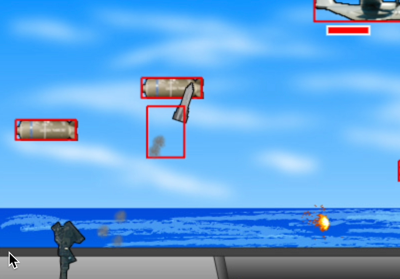
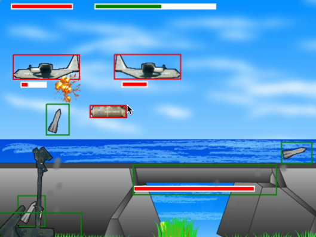

I remade a 20-year-old game to learn Bevy ECS

- Gameplay
- Implementation—old and new
- Entity Component System
- Bevy ECS Inconveniences
- Final notes
- References
I got the fantastic idea to learn Bevy ECS by recreating a game I developed with a friend a long time ago. The main goal is to remake the game, written in Java in the standard pointer soup programming style, using an Entity Component System—a kind of type system driven in-memory database geared towards game programming.
In 2005 Stefan Li1 and I did a game for Värnpliktsrådet2. Värnpliksrådet is a council for and by conscripts from the different branches of the Swedish Armed Forces. This year is the 20th anniversary of the game. Unrelated to that, I have a plan to use an Entity Component System3 for our new rendering engine at work. Let's see if I can transform a 20-year-old Java Applet into a Rust WebAssembly game with a Bevy4 ECS core.
/* Created on 2005-sep-07 */Blog bless whoever came up with automatic headers with dates in new files.
Gameplay

On the surface, Värnpliktsspelet is a simple game: Protect the trucks filled with conscripts and ammo using your ground-to-air BAMSE5 missile launcher during a training exercise. The threat is airplanes of the type C-130 Hercules6 that have been mistakenly loaded with real bombs!
There are several resource management and tactics dimensions to the game, which has an intense action flavor. You have a limited amount of missiles, and you need to use them to protect your BAMSE system, a bridge, and the ammo trucks.
You get upgrades on every level that is divisible by three: Level 3, 6, 9, and so on: Faster missiles, capacity to store more missiles, and repairs for BAMSE and the bridge.
Resource management
You can try to knock out an airplane using two missiles, or take out a bomb using one missile. At first that equation seems simple: Each airplane can drop three bombs, so it's cheaper to take out an airplane; and the decision keeps getting easier since the airplanes carry more bombs each round. The problem is that there are a lot of planes, and a lot of bombs being dropped. Unless you focus at least some of the missiles on cleaning up bombs, you will run out of ammo.
Strategy
The bridge can take some damage, but can get repaired if you survive long enough, meaning you can let it take a few hits. BAMSE can also take a few hits, but beware: As long as BAMSE is damaged, missiles will behave unpredictably! Ammo trucks can take two hits, which means that they can act as a shield for the bridge, and for BAMSE. You can even sacrifice a few trucks since the trucks carry a lot more ammunition than you can use, at least in the beginning.
The firing arm can't be rotated to fire straight up, so you have to have the right timing and be frugal with missiles to defend the ramp from bombs coming from straight above. Some bombs will be borderline impossible to defend.
Implementation—old and new
Threads
The old Java implementation had code running across three threads:
RenderThread, LevelThread, and MoveThread. It incorrectly peppered the
synchronized keyword on member fields, but not a single synchronized block
which I'm sure wasn't very correct. The new Rust implementation
uses one thread—the JavaScript main thread—and a few Mutexes to appease the
borrow checker. The Java implementation should have used just one thread too.
Framerate
To keep the framerate and other parts of the program consistent, the Java
implementation makes liberal use of Thread.sleep, opting for sleep(40) to
control the framerate. Using a 40-millisecond sleep is equivalent to 25 fps. The
render loop also handled spurious thread wakes by doing a bit of extra sleep in
a loop until the target sleep time was reached.
Instead of interpolating the positions of the different moveable elements, there
was a 50 milliseconds sleep in the MoveThread. Why 50 millis in the
MoveThread, but 40 in the RenderThread? I wish I could tell you. I'm not proud.
Any hiccups in the MoveThread would have caused the graphics to stall. That
might have been an OK call for a single player game, but I think time based
interpolation is generally the correct way to handle animation so that's
something that will change in the new implementation.
The new implementation uses time based interpolation for movement and
animations, and requestAnimationFrame7 to drive the updates from JavaScript.
Using requestAnimationFrame gives the game a framerate that matches the
display refresh rate.
Hilariously bad bounding boxes
Missiles need to be rotated when fired, and the canvas API can do that just fine
with some calls to save, translate, rotate, and restore
Bounding boxes aren't much trickier, but I wanted to stay true to the original game, so no fancy matrix transforms, just this fabulous bounding box:
missile bounding box size
pub fn rotated_size(&self) -> Size {
Size::new(
self.width * self.rotation.cos() + self.height * -self.rotation.sin(),
self.width * -self.rotation.sin() + self.height * self.rotation.cos(),
)
}The bounding box is a bit larger than necessary, but that's not a problem I care about. This is a problem I care about:
Terrible bounding box


Images are drawn from pixel (0,0), not from the center of the image, which
needs to be adjusted for. The old game didn't do this, but I felt leaving that
bug in was a bridge too far. So we need to draw from the middle of the image,
but we also need to adjust all the bounding box intersection calculations.
Here's the code for adjusting the drawing of the missile:
missile image draw code
canvas.save();
canvas.translate(position.x, position.y);
canvas.rotate(missile.angle);
// Draw the image centered on (x, y)
canvas.draw_image(missile_img.as_ref(), -size.width / 2.0, -size.height / 2.0);
canvas.restore();which is obviously better
Much better


JavaScript fun and Rust separation of concerns
Input (mousemove, touchmove, mouseup, and so on), resources (images,
sounds), and audio playback are handled by JavaScript. You can read all the
JavaScript glue code by inspecting the source of this page in your browser.
The Rust code is split into two parts: A wasm package, that contains the
wasm-bindgen8 code and implementations of the JavaScript shims for the
Canvas and PlayAudio traits defined in the main engine package. Separating the
implementation from the host wasn't really necessary since I'm not planning on
implementing the game for any other platform than the web, but it was useful
insofar that I got some confidence that such a split will work for my real
project at work.
The Audio trait is very simple; it's defined in the engine package
engine
pub trait Audio {
fn play(&self);
}and implemented in the wasm package
wasm
pub struct AudioWeb {
audio: AudioBuffer,
// A JavaScript function called playAudio that uses an AudioContext
// to be able to play multiple sounds at the same time.
play_fn: web_sys::js_sys::Function,
}
impl AudioWeb {
pub fn new(audio: AudioBuffer, play_fn: web_sys::js_sys::Function) -> AudioWeb {
AudioWeb { audio, play_fn }
}
}
impl Audio for AudioWeb {
fn play(&self) {
self.play_fn.call1(&JsValue::NULL, &self.audio).unwrap();
}
}Similarly, but much more code, for the Canvas trait.
Lines of code
This is mostly a feature-for-feature remake of the original game, with some additional bug fixes and arguably better structured code, so I wanted to see how that affected the line count. Lines counted by tokei9
Java Applet
===============================================================================
Language Files Lines Code Comments Blanks
===============================================================================
HTML 2 28 19 1 8
Java 24 2963 2094 320 549
===============================================================================
Total 26 2991 2113 321 557
==============================================================================Rust
===============================================================================
Language Files Lines Code Comments Blanks
===============================================================================
Shell 1 10 5 2 3
TOML 3 90 62 17 11
-------------------------------------------------------------------------------
HTML 1 14 13 0 1
|- JavaScript 1 176 152 1 23
(Total) 190 165 1 24
-------------------------------------------------------------------------------
Rust 40 2317 2077 9 231
|- Markdown 2 3 0 3 0
(Total) 2320 2077 12 231
===============================================================================
Total 45 2431 2157 28 246
===============================================================================The Rust implementation has 44 more lines, but the Java repository doesn't have any shell scripts for building artifacts, and is missing at least a JAR manifest. When I set out to do this I thought Rust would fare a bit better than what it did, but maybe Rust code is a bit more verbose than I give it credit for. Let's call it a draw.
Entity Component System
Let's hear what Wikipedia has to say about ECS3
Entity–component–system (ECS) is a software architectural pattern mostly used in video game development for the representation of game world objects. An ECS comprises entities composed from components of data, with systems which operate on the components.
"A monad is a monoid in the category of endofunctors"10 what?
I'll spend the following sections trying to explain what an Entity Component System is, and how Bevy ECS11 works. The TL;DR is "a database that makes it possible to avoid the pointer soup software architecture". I just made that up.
I feel like I've only scratched the surface of what Bevy ECS can do. Correctly utilized it promises parallel execution of systems that don't have overlapping queries, which seems in line with the promises of Rust's fearless concurrency story. I've had a few runtime panics from holding it wrong, which mostly isn't a thing in Rust from my five odd years of experience, so we will need to build an intuition around how to avoid those crashes.
Put a pin in that last sentence, we'll revisit it a little later.
Entities and components
Entities are instantiated by combining one or more components, each component
being an attribute of the entity and often one or more pieces of data associated
with the component. A unit in a strategy game would have a Weapon, a
Position, a Team, a Faction etc. Position being a mutable (x, y)
tuple, Faction being terran, protoss, or zerg.


I think I would have put the entities as the rows and the components as the columns, probably. That's the way I think about entities anyway; an entity is a row in a database with a checkmark in every column for the different components that entity has.
In Värnpliktsspelet there are missiles, enemies, friends, a bridge and so on. A
missile is instantiated every time a mouseup or touchup event is registered
by the web browser.
Spawning a missile
let angle = ramp.angle(mouse_position);
let random_factor = (MissileRamp::MAX_HEALTH - health.health) / 5;
let missile_speed = ramp.missile_speed as f64;
commands.spawn((
Missile::new(
angle,
random_factor,
time.now + random.next_float(300.0) as u64,
),
Position::new(33.0, 390.0),
Size::new_with_rotation(46.0, 24.0, angle),
Speed::new(missile_speed * angle.cos(), missile_speed * angle.sin()),
Timestamp::new(time.now),
Bounded,
));The "missile entity", when spawned, is given the components Missile,
Position, Size, Speed, Timestamp and Bounded. Most of those are
self-explanatory, but Timestamp and Bounded might need a few words:
Timestamp is used to track when an entity last moved—for
interpolation—and Bounded is a marker component that is used to query
any entity that should be despawned when going out-of-bounds.
Notice that we don't give entities names, and entities don't have a custom
type: every entity is a bevy_ecs::entity::Entity. Entities are automatically
given an id that you can save for later, but I didn't need to do that once for
this game.
Every time an entity is spawned it is added to the "database" of rows (or columns, whatever is more intuitive to you), and it can be queried out of the database and manipulated by systems.
Systems
Systems interact with the World by implementing functions that Query the
world for entities. Systems also retrieve resources and events. All of that is
supported by some type system magic, making it possible to just declare
what you need as function parameters—in any order—and it mostly does what you
think it does.
A fairly complex but readable system declaration
/// This system recieves MouseUpEvents and performs world actions based on those
fn mouse_up_system(
// New events
mut evts: EventReader<MouseUpEvent>,
// The current game state, clicking "Start" on the initial screen
// will mutate the game state by changing it from `Init` to `Running`
mut state: ResMut<GameState>,
// Commands spawn and despwan entities
mut commands: Commands,
// We need access to the missile ramp to fire missiles
mut query_missile_ramp: Query<(&mut MissileRamp, &MousePosition, &mut Health)>,
// Current world time in milliseconds
time: Res<Time>,
// Any respectable game has an RNG
random: NonSend<Arc<dyn Random>>,
) {
// ...Värnpliktsspelet is a tiny game, but I feel it has a lot of systems. I'd imagine a huge game having a lot more but even the modest amount of systems in this game take some mental effort to keep track of. Having a system for structuring the ECS systems across different modules is required for any game even slightly larger than this one. Maintaining discipline by not putting too many things into one system also seems important to be able to maintain and understand them over time.
Lots of systems
schedule.add_systems(reset_system);
schedule.add_systems(missile_ramp_mouse_system);
schedule.add_systems(mouse_position_system);
schedule.add_systems(mouse_up_system);
schedule.add_systems(next_level_missile_ramp_system);
schedule.add_systems(generator_system.run_if(run_if_game_state_running));
// And 21 more ...27 systems by my count
My biggest struggle with these systems is that I started out with very few
components for the entities—I think most programmers feel smart when
we reuse things, doing the whole DRY thing and whatnot. But my (somewhat small)
amount of ECS experience tells me that I need to keep component reuse dumb.
Position and MousePosition are different things. I felt smart reusing the
Position component for my mouse position entity: Mouse and Position
together. But any query for things with a Position would also bring in the
Mouse causing a few minutes of confusion when the mouse position started to
jitter.
Let's have a look at the smoke system. When missiles travel across the screen they leave trails of smoke that animate and move.
Smoke system
fn spawn_smoke_system(
// Commands let you spawn or despawn entities
mut commands: Commands,
// An iterable query with mutable missiles
mut query: Query<(&mut Missile, &Position, &Speed, &Size)>,
// Time is a global, called a Resource in Bevy ECS
time: Res<Time>,
// Another global, but this one is !Send
// Using Arc here is a bit nonsensical but whatever
random: NonSend<Arc<dyn Random>>,
) {
for (mut missile, position, speed, size) in &mut query {
if missile.smoke_counter > 0 && time.now > missile.next_smoke_time {
missile.smoke_counter -= 1;
missile.next_smoke_time = time.now + random.next_float(300.0) as u64;
let smoke_decrease_x = speed.x / 5.0;
let smoke_decrease_y = speed.y / 5.0;
let ang_x = -10.0 * missile.angle.cos() + 10.0 * missile.angle.sin();
let ang_y = -3.0 * missile.angle.cos() + 3.0 * missile.angle.sin();
let offset_x = size.width / 2.0 + ang_x;
let offset_y = size.height / 2.0 + ang_y;
let dx = missile.smoke_counter as f64 * smoke_decrease_x - offset_x;
let dy = missile.smoke_counter as f64 * smoke_decrease_y - offset_y;
commands.spawn((
Smoke::new(time.now + 200),
Position::new(position.x - dx, position.y - dy),
Size::new(16.0, 16.0),
// Smoke moves to the left with a random amount 0-10
// and upwards -4 per time unit.
Speed::new(random.next_float(10.0), -4.0),
Timestamp::new(time.now),
Moveable,
Bounded,
));
}
}
}Notice how when we spawn Smoke, we add a Moveable component. That's because
almost everything that moves on screen is Moveable and is handled by this
simple system:
Moving movables
fn move_moveables_system(
time: Res<Time>,
// Any Moveable that has a Position, a Speed, and a Timestamp
mut query: Query<(&mut Position, &Speed, &mut Timestamp), With<Moveable>>,
) {
for (mut position, speed, mut timestamp) in &mut query {
// There might be rounding errors to take into account for
// interpolation, but I Have Zero Fucks Left To Give
let diff = (time.now - timestamp.time) as f64 / 120.0;
position.x += diff * speed.x;
position.y += diff * speed.y;
timestamp.time = time.now;
}
}But missiles can have a bit of randomness to them if the missile ramp is
damaged, so we need a separate system for that. To make sure missiles aren't
moved twice, missiles aren't Moveable—we simply don't add Moveable when we
spawn a Missile.
Moving missiles
fn move_missiles_system(
time: Res<Time>,
// All Missiles
mut query: Query<(&Missile, &mut Position, &Speed, &mut Timestamp)>,
random: NonSend<Arc<dyn Random>>,
) {
for (missile, mut position, speed, mut timestamp) in &mut query {
// Might even be a negative amount of fucks, actually
let diff = (time.now - timestamp.time) as f64 / 120.0;
position.x += diff * speed.x;
position.y += diff * speed.y;
if missile.random_factor > 0 {
position.x += 2.0 * diff * random.next_float((i32::MAX % missile.random_factor) as f64);
position.y += 2.0 * diff * random.next_float((i32::MAX % missile.random_factor) as f64);
}
timestamp.time = time.now;
}
}Resources
Resources in Bevy ECS are global values that can be read and mutated from systems.
There's only one of each resource, and it's identified by its type. In
Värnpliktsspelet the resources are Time, Images, Sounds, GameState,
Random, and DebugBoundingBoxes.
Events
This is the full list of events used by Värnpliktsspelet:
Events
EventRegistry::register_event::<MousePositionEvent>(&mut world);
EventRegistry::register_event::<MouseUpEvent>(&mut world);
EventRegistry::register_event::<NextLevelEvent>(&mut world);
EventRegistry::register_event::<InitEvent>(&mut world);Events are used as communication channels between systems or from the outside
world into systems. Whenever the JavaScript side of the game registers mouseup
or touchup, a MouseUpEvent is sent
Mouse / Touch up
pub fn mouse_up(&mut self, x: f64, y: f64) {
self.world.send_event(MouseUpEvent { x, y });
}Bevy ECS Inconveniences
Remember when I said to put a pin in it?
This section will be grist to the mill for the people that love to dunk on the if it compiles it works mantra that Rust evangelists love to profess. If you want to keep dunking, there are plenty of places for that. I'm mostly siding with the Rust truthers, but like everything in software engineering
IT'S 👏 A 👏 TRADE-OFF
I have two gripes: crashing due to concurrent exclusive access12, and despawning the same entity multiple times.
Concurrent exclusive access
Rust promises safe and sound programs as long as we observe all the invariants
of any unsafe code we call, and as long as we don't write any incorrect
unsafe code. Most Rust programs call unsafe code through safe interfaces,
but I rarely write any unsafe code myself. What Rust doesn't do is promise
programs that don't leak memory, that don't have deadlocks, etc. etc. etc.
One thing that I've gotten used to is that the type system mostly has my back. If I don't hold it right, I will get a compiler error. If I try to have exclusive access12 of a piece of data in two different parts of my program at the same time, the Rust compiler will tell me that I did something I'm not allowed to do. As an example, if I tried to loop over the same mutable slice twice, Rust would be disappointed in me:
Not a proud parent
fn double_mutable_loop(positions: &mut [Position]) {
// error[E0499]: cannot borrow `*positions` as mutable more than once at a time
for f_pos in positions.iter_mut() {
// --------------------
// |
// first mutable borrow occurs here
// first borrow later used here
for e_pos in positions.iter_mut() {
// ^^^^^^^^^ second mutable borrow occurs hereBevy ECS Query—or any other memory management abstraction that bypasses the
borrow checker, like RefCell13—lets you write code that breaks the
rules but instead lead to runtime panics when used wrong. I'm writing code that
looks like it should work, it looks like the compiler should yell at me because
I'm looping mutably over the same slices of memory, but it can't tell me because
it doesn't have that information.
OOPSIE WOOPSIE!! Uwu We made a fucky wucky!!
/// This will trigger a runtime crash
fn double_mutable_loop_system(
// The list of mutable positions here
mut query_friends: Query<(&Friend, &mut Position)>,
// Can overlap wit the list of mutable positions here at runtime
mut query_enemies: Query<(&Enemy, &mut Position)>,
) {
for (_friend, mut f_pos) in &mut query_friends {
for (_enemy, mut e_pos) in &mut query_enemies {
tracing::info!("This code will never execute");
f_pos.y = 100.0;
e_pos.y = 100.0;
}
}
}Which inevitably leads to a runtime crash
I am inevitable
panicked at ~/.cargo/registry/src/index.crates.io-6f17d22bba15001f/bevy_ecs-0.15.0-rc.2/src/system/system_param.rs:356:5:
error[B0001]: Query<(&engine::objects::enemy::Enemy, &mut engine::primitive::position::Position), ()> in system engine::double_mutable_loop_system accesses component(s) engine::primitive::position::Position in a way that conflicts with a previous system parameter. Consider using `Without<T>` to create disjoint Queries or merging conflicting Queries into a `ParamSet`. See: https://bevyengine.org/learn/errors/b0001
Stack:
Error
at imports.wbg.__wbg_new_8a6f238a6ece86ea (http://localhost:8000/pkg/wasm.js:408:21)
at http://localhost:8000/pkg/wasm_bg.wasm:wasm-function[426]:0x49e5c
at http://localhost:8000/pkg/wasm_bg.wasm:wasm-function[1017]:0x56324
at http://localhost:8000/pkg/wasm_bg.wasm:wasm-function[167]:0x30cab
at http://localhost:8000/pkg/wasm_bg.wasm:wasm-function[127]:0x2a400
at http://localhost:8000/pkg/wasm_bg.wasm:wasm-function[62]:0x6367
at GameHandle.update (http://localhost:8000/pkg/wasm.js:261:14)
at renderLoop (http://localhost:8000/:175:12)
at startGame (http://localhost:8000/:179:5)
at async run (http://localhost:8000/:184:5)The correct intuition to have is that Bevy ECS' Query is analogous to
RefCell13. Avoid mutably / exclusively accessing the same component in
the same system and everything will work out. Just Be Careful, is what I'm
trying to say. At least we get a runtime panic instead of memory corruption,
like it would in memory unsafe languages.
@laund@tech.lgbt replied to my post on mastodon to clarify that systems are checked on first execution of their schedule, so there doesn't need to be an actual memory violation for the panic to happen—Bevy ECS will let us know much earlier.
I also visited the link in the error message, which goes to a page that teaches us that there are two ways to work around having exclusive access to the same component in two queries in a system:
- Using the
With<ComponentType>filter on one query andWithout<ComponentType>filter on the other - Use a
ParamSetwhich makes it possible to have at most eight queries with overlapping exclusive access
To me this is a minor inconvenience. If you're doing anything remotely serious you will have unit tests, system tests, or integration tests, as well as manual run-throughs of your code. If you don't have any of those: tough luck. I don't want to start a language war here, but if I was coming from literally any other programming language, this wouldn't be the hill I'd die on.
Despawning an entity multiple times
In the end, I categorized the previous section as a "minor inconvenience", making this section a Microscopic Inconvenience at worst.
It's not uncommon for entities in Värnpliktsspelet to be despawned more than once. Since systems run one after the other—I blame JavaScript—and Bevy ECS has a policy of not removing despawned entities until after a full world update, for good reasons, it's possible to have multiple despawns of the same entity. For example, a bomb could intersect with a missile in the same update as it intersects with a truck.
Multiple despawns of the same entity don't lead to a runtime crash, it just prints an error message:
Multiple despawns
~/.cargo/registry/src/index.crates.io-6f17d22bba15001f/bevy_ecs-0.15.0-rc.2/src/world/mod.rs:1532 error[B0003]: crates/engine/src/lib.rs:592:49: Could not despawn entity 25v32#137438953497 because it doesn't exist in this World. See: https://bevyengine.org/learn/errors/b0003As far as I can tell, the policy is that this is something that each game should
handle somehow. One piece of advice is
to handle despawning in its own system
by checking the hitpoints or some other piece of shared data. Another piece of
advice from that same thread is to send a despawn event. I imagine it could be
possible to add some sort of IsDespawned component too.
Final notes
I think the ECS pattern is an excellent tool to have in your software development toolbox, and I think that it's especially useful when you're doing computer game style software. I'm looking at adopting this pattern at work for our cross-platform rendering stack. It's not a game engine, but it's also not-not a game engine.